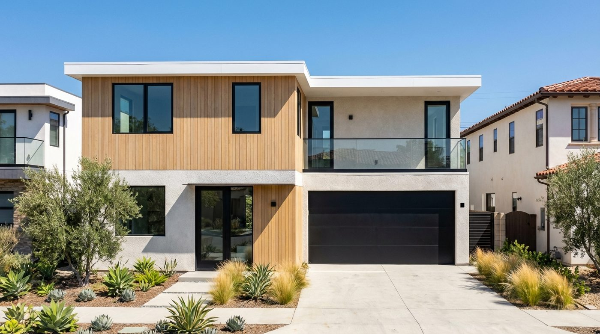

Example Build · Los Angeles, CAOne coordinated building system for Los Angeles housing.
Use 4C SAFE for fire- and code-driven conditions and 4C ECO for Type V infill, ADUs, and cost-sensitive projects. Both use the same coordinated design, manufacturing, delivery, and installation process.
4C exists to break that bottleneck. Components are manufactured off-site at our Hayward facility while permitting moves in parallel, so your project isn't waiting in line for the same constrained labor pool as every other rebuild in the county. That cuts onsite construction time by up to 30% versus conventional stick-framing, without asking architects or homeowners to change how a project is designed, financed, or permitted.
Every component is manufactured under a materially certified system, not a novel or unproven material: 4C SAFE™ is steel-framed, fire-resistant, and rated 1-HR and 2-HR fire-resistive, WUI compliant, and ICC-ES listed under ESL-1695 (patent pending), so it meets the same code officials and inspectors already trust.
A market with two very different challenges.
Los Angeles is one of the largest and most varied construction markets in the country, and it puts two very different demands on a building system. In the hillside and canyon communities that ring the basin, much of the housing stock sits inside high fire-hazard severity zones, where fire-resistant construction and fire-resistive assemblies aren't optional extras: they're the baseline. At the same time, LA is home to one of the most active accessory dwelling unit and infill markets in California, where developers and homeowners need to add square footage quickly, on tight lots, without blowing a budget. Reducing embodied carbon and material waste is part of that equation too, which is why sustainability is built into how both systems are manufactured.
4C Construction Systems manufactures a panel system for each side of that equation. Both arrive pre-labeled and pre-engineered, require no heavy equipment to assemble, and integrate with the design, financing, and permitting process an LA architect or developer has already built. No redesign is required. That efficiency ties directly back to our four pillars of cost, carbon, complexity, and compliance.
4C SAFE™ for wildfire-interface lots
Steel-framed and fire-resistant with a 1-HR and 2-HR fire rating (ICC-ES ESL-1695, patent pending), built for the hillside and canyon neighborhoods where fire hazard severity is highest.
4C ECO™ for infill and ADUs
Wood-framed Type V construction (ICC-ES ESR-3373) optimized for thermal efficiency and budget control, a strong fit for LA's multifamily and ADU pipeline.
Faster timelines citywide
Both systems cut onsite construction time by up to 30% versus conventional stick-framing, which is valuable in a market where permitting and scheduling are already tight.
Delivered: a single-family residence in Los Angeles.
This home was built on the 4C panel platform, combining factory precision with a layout suited to family living, office included.
Los Angeles Residence
Los Angeles, CA
A single-family home with office and 2-car garage, delivered on the 4C panel platform.
Status: advancing through design and permitting.
4C Construction Systems sells exclusively through architects, GCs, and developers, so if you're a homeowner, your design professional is the one who specifies the panel system on your behalf.
Los Angeles construction: two crises, one faster way to build.
A closer look at the housing shortage and fire-rebuild pressure facing Los Angeles County, and why factory-built panels have moved to the center of the state's recovery strategy.
Los Angeles is the largest construction market in California, and the one under the most pressure from two directions at once. On one side is a structural housing shortage: the City of LA is expected to plan for roughly 456,600 new homes by 2029 under the current Regional Housing Needs Allocation, yet had permitted only about 18% of that, some 81,000 units, by the end of 2025 with half the cycle gone. Statewide, California is estimated to be short around 2.5 million homes. On the other side is a historic rebuild. Both demand the same thing conventional construction struggles to deliver: more finished housing, faster.
A rebuild the region can't complete fast enough
The January 2025 Palisades and Eaton fires destroyed roughly 16,255 structures across LA County and caused an estimated $250 to $275 billion in damage, likely the costliest wildfire disaster in US history. Los Angeles has moved faster than it ever has, issuing rebuild permits at about three times the pre-fire pace, but the numbers still tell the story: by early 2026, only around 2,600 residential rebuild permits had been issued across the Palisades and Altadena, roughly one for every five of the nearly 13,000 homes lost, and completed homes numbered in the low double digits. The bottleneck has shifted from permitting to construction itself, the labor, materials, and schedule every stick-framed rebuild competes for at once. 4C exists to break that bottleneck by moving the build off the critical path and into a factory; our construction manufacturing page explains how, and we run dedicated rebuild programs in Altadena and Pacific Palisades.
The state is betting on factory-built housing
California has made that same bet at the policy level. In February 2026 the state added funding specifically to help fire survivors access factory-built and prefabricated housing, explicitly to speed recovery and preserve neighborhood character, on top of executive orders that suspended CEQA and Coastal Act review for rebuilds and a legislative package setting 30-day permit goals. 4C fits that strategy precisely: 4C SAFE™ is a materially certified, ICC-ES listed system (steel-framed, fire-resistant, 1-HR and 2-HR fire-resistive under ESL-1695, patent pending), not a novel or unproven material, so it meets the same code officials and inspectors already trust while delivering the speed the moment calls for.
Rising costs and a widening labor gap
Industry estimates put standard LA residential construction in the range of $250 to $500 per square foot, with custom and hillside work well above that, and costs climbing several percent a year. Labor is the harder constraint: about two-thirds of California contractors name skilled-worker shortages as their top challenge, and LA County alone is projected to need roughly 40,000 housing-focused construction workers a year through 2029, nearly a third more than today. Panelized construction is a direct lever against both, moving the bulk of assembly into a controlled plant staffed by a consistent crew and cutting onsite construction time by up to 30%. That's a meaningful advantage for the builders and developers we work through.
One of the country's biggest ADU markets
Not all of LA's demand is rebuilds. The city permitted 6,626 accessory dwelling units in 2024, one of its highest counts on record, and ADUs now make up roughly one in three new housing units built citywide, making Los Angeles one of the largest ADU markets in the country. State law now requires cities to offer pre-approved ADU plans to compress permit timelines. 4C ECO™, our wood-framed Type V system (ICC-ES ESR-3373), is built for exactly this work, thermally efficient, budget-disciplined, and quick to assemble on the tight lots ADUs and infill go on, without requiring a redesign of plans an architect has already drawn.
Fire hazard zones that keep expanding
The fires also reset the map. CAL FIRE's 2025 hazard maps added more than 440,000 acres to Los Angeles County's fire hazard zones, about a 30% increase in the highest "Very High" category, pulling more hillside and canyon neighborhoods into stricter Chapter 7A construction requirements. For those sites, 4C SAFE™'s fire-resistant steel construction is engineered around fire resistance from the frame outward, not added as a finish layer, giving builders in the Santa Monica Mountains, the Verdugos, and the San Gabriel foothills a rebuild option matched to the risk profile.
How 4C works with the Los Angeles construction industry
We sell through the industry, not around it, working exclusively through partners: architects, GCs, developers, and material vendors, rather than direct to homeowners. We've already delivered a single-family residence in Los Angeles on the 4C platform, and our dedicated Altadena and Pacific Palisades rebuild programs put the same system to work in the county's hardest-hit communities. In a market defined by a housing shortage and a recovery that both hinge on building faster, moving more of the work into the factory is one of the few strategies that adds real capacity. Compare the two systems on our systems overview, or see completed work in our project portfolio.
Building in a high fire-hazard severity zone in the Santa Monica Mountains, the Verdugos, or the San Gabriel foothills? Our team can help you evaluate whether 4C SAFE™ fits your project's risk profile and local building department requirements. If you're rebuilding after a wildfire, see our dedicated programs for Altadena and Pacific Palisades, two LA County communities where we're already supporting fire-resistant rebuilds.
Building in Los Angeles?
Tell us about your site and timeline, and we'll help you choose between 4C SAFE™ and 4C ECO™.